<p style="font-size: 16px; color: #999; margin:5px; position: absolute;"><a href="..">Homepage</a> | <a href="?print-pdf">Printable Version</a></p> <div style="display: flex; justify-content: center; align-items: center; height: 700px;"> <div style="text-align: center; padding: 40px; background-color: white; border: 2px solid rgb(0, 63, 163); border-radius: 20px; box-shadow: 0 0 20px rgba(0,0,0,0.1);"> <h1 style="font-size: 48px; font-weight: bold; margin-bottom: 20px; color: #333;">SI100B Fall 2026 Recitation 4 (A)</h1> <p style="font-size: 24px; color: #666;">Lec07-08 回顾 & VS Code 与 Linux 终端</p> <p style="font-size: 16px; color: #999; margin-top: 20px; margin-bottom:5px">SI100B 2026 Staff</p> </div> </div> <!--s--> ## Homework 2 - 已发布；**截止：2026 年 10 月 20 日 21:00**。 - **Q1 / Q2：函数基础、库存管理** - 只提交要求的函数定义，不调用 `input()`，不保留测试代码。 - **Q3 / Q4：打印站模拟、自动售货机** - 提交完整程序，严格按照题面要求处理输入和输出。 - 请参考 **26 Fall HW2** 的题面与样例，注意本学期的接口和规则。 <!--s--> <div class="middle center"><div style="width: 100%"> # Functions as Objects </div></div> <!--v--> ## Functions as Objects - 回顾：“Python 中，函数是一等公民” - 函数可以像其他数据类型一样被传递、赋值和使用 - 示例：灵活折扣系统 - 定义主函数`apply_discount(price, discount_strategy)` - `discount_strategy`是一个函数，计算折扣金额 <!--v--> ### Example: Discount Strategy System ```py def apply_discount(price, discount_strategy): discount = discount_strategy(price) final_price = price - discount return final_price # 定义一些折扣策略函数 def fixed_discount(price): """固定折扣 - 减 10 元""" return 10 def bulk_discount(price): """批量折扣 - 满 100 打 8 折，否则 9 折""" if price > 100: return price * 0.2 # 20% 折扣 return price * 0.1 # 10% 折扣 ``` - Lambda function 是什么？ <!--v--> ## Lambda 表达式：随拿随用的“函数” 假设你正在写代码，需要一个非常简单的函数，比如计算一个数的平方。这个函数你可能只会在这里用一次，之后就再也用不到了。 按照常规方法，你会这样做： ```python def square(x): return x * x # 然后在需要的地方调用 result = square(5) print(result) # 输出 25 ``` 但是这很“小题大做” <!--v--> ## Lambda 表达式的特点 **Lambda 表达式**允许我们创建**匿名的、小型的、单行的函数** - **匿名 (Anonymous) 函数：**没有正式名字，不像 `def` 定义的函数那样必须命名 - **小型 (Small)：**设计用来执行简单任务，通常只有一行 - **表达式 (Expression)：**Lambda 本身是一个**表达式**，而不是一个语句 - 可以作为对象操作：可以在一个列表里定义它，或者作为参数传递给另一个函数，等等 - 注：由于使用形式与函数类似（如在括号内写参数），其有时也被俗称为“Lambda 函数”，但请注意其本质仍然是表达式 <!--v--> ## Lambda 表达式语法 ```python lambda arguments: expression ``` **`arguments`:** 参数列表，和`def`函数定义中括号里的参数一样。 - **没有参数**: `lambda: "Hello, World!"` - **一个参数**: `lambda x: x + 10` - **多个参数**: 用逗号`,`隔开，如 `lambda a, b: a * b` - 支持一般函数 (`def`) 所支持的参数形式： - **默认参数：** `lambda x, y=10: x + y` - **可变参数：** `lambda *args: sum(args)` **`expression`:** 表达式；其计算结果是**此 lambda 表达式的返回值**（即自带 `return` 效果） - 不需要也不能显式地写 `return` 关键字 <!--v--> ## Lambda 表达式的例子 - **常规函数:** ```python def add(x, y): return x + y ``` - **等效的 Lambda 表达式:** ```python add_lambda = lambda x, y: x + y # 调用方式完全一样 print(add(3, 5)) # 输出 8 print(add_lambda(3, 5)) # 输出 8 ``` <!--v--> ### 回到原来的使用示例 ```py original_price = 150.0 # 固定折扣 apply_discount(original_price, fixed_discount) # 进行的计算：150.0 - 10 # 批量折扣 apply_discount(original_price, bulk_discount) # 150.0 - 150.0 * 0.2 # 也可以直接使用 lambda 表达式…… apply_discount(original_price, lambda p: p * 0.15) # 15% 折扣 ``` <!--s--> <div class="middle center"><div style="width: 100%"> # Tuple </div></div> <!--v--> ## Tuples（元组） - 一种新的复合数据类型 - 不可变（immutable） - 用圆括号`()`表示 - 支持索引、切片、合并、长度、最大/最小值等操作 **Tuples 操作示例** ```python tuple_empty = () # 空元组 tuple_short = (2,) # 单元素元组需加逗号 hello_tuple = (2, "stu", 3) hello_tuple[0] # 2 hello_tuple[1:3] # ("stu", 3) ``` <!--v--> ## 4. 解包与多值返回 元组非常适合用于**变量交换**和**多返回值**函数。 - **变量交换：** `(x, y) = (y, x)` （无需额外借助 `temp` 变量） - **返回多个值：** ```python def quotient_and_remainder(x, y): return (x // y, x % y) (quot, rem) = quotient_and_remainder(5, 2) ``` - **可变参数 `*args`** ```python def mean(*args): tot = 0 for a in args: tot += a return tot / len(args) if len(args) > 0 else 0 print("计算平均值:", mean(1, 2, 3, 4, 5, 6)) ``` <!--s--> <div class="middle center"><div style="width: 100%"> # List </div></div> <!--v--> ## List (列表) - 可变（mutable）序列 - 用方括号`[]`表示 - 可包含任意类型元素 - 支持索引、切片、合并、迭代等操作 ```python empty_list = [] hello_list = [2, "a", 4, [1, 2]] hello_list[0] # 2 hello_list[3] # [1, 2] [1, 2] + [3, 4] # [1, 2, 3, 4] ``` <!--v--> ## 常用的 List 的方法 - `append(element)`：在末尾添加元素；无返回值 (`None`) - `sort()`：原地对元素进行排序；无返回值 (`None`) - 默认正序；加上可选参数 `reverse=True`为倒序 - 可指定要参照哪个关键字进行排序；详情查阅 Python 手册 - `reverse()`：原地反向排列元素；无返回值 (`None`) - `sorted(list)`：返回新排序的列表；**不修改原列表** **“原地”/“就地”**：对对象本身进行修改 <!--v--> ## Lists 与函数 可传递列表给函数，函数内可修改原列表（副作用） 示例：平方列表中所有元素 ```python def square_list(L): for i in range(len(L)): L[i] = L[i] ** 2 ``` <!--v--> ## 字符串与列表互转 字符串转列表： - `list(s)`：每个字符作为元素 - `s.split(char)`：以字符 `char` 作为分隔符，进行分割 列表转字符串： - `'_'.join(L)`：用指定字符连接 - `''.join(L)`：将列表中的所有元素连成一整个字符串 <!--s--> <div class="middle center"><div style="width: 100%"> # 迭代时的修改隐患 </div></div> <!--v--> ## 1. 危险的操作：边迭代边修改 一个非常常见的错误是：在使用 `for` 循环遍历列表时，同时对其进行 `remove` 或 `append`。 ### 思考题：移除所有指定的元素 尝试写一个函数 `remove_all(L, e)` 移除列表中所有的 `e`： ```python # 错误做法！ def remove_all(L, e): for elem in L: if elem == e: L.remove(e) L = [1, 2, 2, 2] remove_all(L, 2) print(L) # 结果竟是 [1, 2]！ ``` <!--v--> ## 2. 为什么会失败？ - Python使用内部计数器跟踪循环的索引。 - 当你移除一个元素时，剩余元素会向左移动填补空缺。 - 但Python**不会**把内部计数器退回一步。 - 结果就是，循环会“跳过”被移到刚刚空缺位置的那个元素！ *正确的做法是使用 `while` 循环，或者遍历列表的副本（比如 `for elem in L[:]`）。* ```python def remove_all(L, e): while e in L: L.remove(e) # 或者 def remove_all(L, e): for elem in L[:]: # 遍历副本 if elem == e: L.remove(e) ``` <!--v--> ## 3. 边迭代边修改的陷阱举例 **无限循环：** ```python L = [1, 2, 3, 4] for e in L: L.append(0) print("这将导致无限循环，因为 L 不断增长，迭代不会结束") ``` 由于循环直接跟随着列表元素的增加，它永远也达不到终点，造成死循环！ ```python # range 循环 (安全) L_range = [1, 2, 3, 4] for i in range(len(L_range)): L_range.append(i) print("range循环结果:", L_range) ``` <!--s--> <div class="middle center"><div style="width: 100%"> # Aliasing & Cloning (Copying) </div></div> <!--v--> ## 1. 内存中的对象 在Python中，修改操作是原地发生的，而赋值可能会创建新对象。 使用 `id(L)` 可以查看对象在内存中的地址。 * `L.append(8)`：`L` 的内存地址不变（可变性）。 * `L = L + [8]`：`L` 指向了一个**全新**的对象。 ```python L = [1, 2, 3] print(id(L)) # 假设输出 140123456789000 L.append(8) print(id(L)) # 仍然输出 140123456789000 L = L + [8] print(id(L)) # 输出一个新的地址，如 140123456789500 ``` <!--v--> ## 为什么需要 Copy？ - 赋值语句只是为一个对象**另起**了一个名字（aliasing） - 对于自身可变的对象，会使目标和对象同时改变 - 许多情况下会导致意外修改 ```py l1 = [1, 2, 3] l2 = l1 l2.append(4) print(l2) # [1, 2, 3, 4] modified print(l1) # [1, 2, 3, 4] ``` <!--v--> ### 回顾：函数传入可变对象 - 场景：函数可能对传入的参数进行修改 - 若传入了可变对象，函数对参数进行的修改将直接影响其原始对象 ```py def foo(l2): print("Id of l2 before revised:", id(l2)) l2.append(4) print("Id of l2 after revised:", id(l2)) # same l1 = [1, 2, 3] print("Id of l1:", id(l1)) foo(l1) print(l1) # [1, 2, 3, 4] ``` <!--v--> ## 对一个列表进行 Copy 改变生成的副本不会影响原始对象 `l2 = l1[:]`，或 `import copy` 后 `l2 = copy.copy(l1)` - 等价于：创建空列表 `l2` - 遍历 `l1`，将 `l1` 的每个元素依次 `append` 进 `l2` ```py[] l1 = [4, 5, 6] l2 = l1[:] l2.append(7) print(l2) # [4, 5, 6, 7] print(l1) # [4, 5, 6] ``` <img src="images/Tutorial4_copy.png" width="60%" style="display: block; margin: 0 auto;"> <!--v--> ## 有嵌套的可变对象：避免 Shallow Copy - 上述 `l2 = l1[:]` 和 `l2 = copy.copy(l1)` 都属于浅拷贝（Shallow Copy） - 浅拷贝 **仅拷贝嵌套的第一层** ，第二层或更深（例如其中的可变对象）不会被拷贝 <img src="images/Tutorial4_copy_nested.png" width="80%" style="display: block; margin: 0 auto;"> <!--v--> ## 有嵌套的可变对象：Deep Copy - 当嵌套结构中的元素可能是可变对象时，使用**深拷贝** - 确保每个嵌套层级的每个结构都被复制 <img src="images/Tutorial4_deep_copy.png" width="90%" style="display: block; margin: 0 auto;"> <!--v--> ## 更多例子 ```py import copy orig = ['Hi, I am ', list('Bob')] alias = orig shallow = orig.copy() deep = copy.deepcopy(orig) orig[0] = 'Hi, he is' orig[1][0] = 'C' print(orig, alias, shallow, deep, sep='\n') ``` What should be the output? <!--v--> ## 更多例子 ```text ['Hi, he is', ['C', 'o', 'b']] ['Hi, he is', ['C', 'o', 'b']] ['Hi, I am ', ['C', 'o', 'b']] ['Hi, I am ', ['B', 'o', 'b']] ``` <!--s--> <div class="middle center"><div style="width: 100%"> # Supplement · VS Code 与 Linux 终端 </div></div> <!--v--> ## 今天练习什么？ - **VS Code**：运行程序、打断点、观察变量、单步执行。 - **Linux 终端**：找文件、运行程序、保存输出、查看日志。 - **与 AI 配合**：读懂它给出的命令，用运行结果验证建议。 示例文件位于配套的 `examples/` 文件夹。 VS Code 截图包含 Windows / macOS 界面；操作名称相同。终端命令按 **Linux / WSL 的 Bash** 演示，PowerShell 的语法有区别。 <!--s--> <div class="middle center"><div style="width: 100%"> # VS Code：运行与调试 </div></div> <!--v--> ## 创建文件：打开文件夹 - 首先打开VSCode, 选择打开文件夹以打开你的工作目录 <p>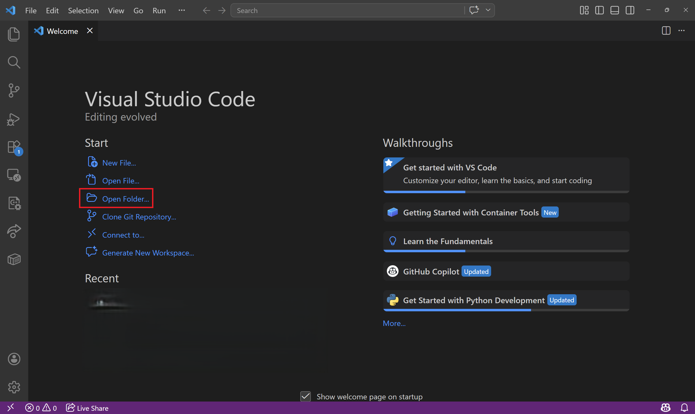</p> Note: 原课件：Spring_2026/Recitation6/Recitation6.md，“VSCode运行Python程序”部分；原截图直接沿用，仅精简说明并补充保存文件。 <!--v--> ## 创建文件：新建文件 - 点击左上角**文件** - **创建新文件**；或者点屏幕中间的创建新文件也行 <p>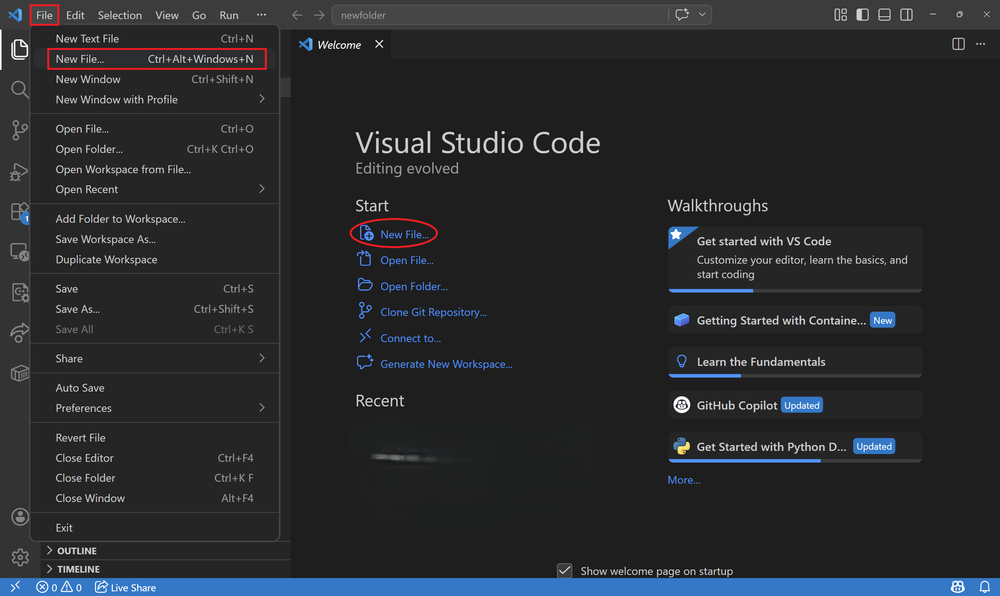</p> Note: 原课件：Spring_2026/Recitation6/Recitation6.md，“VSCode运行Python程序”部分；原截图直接沿用，仅精简说明并补充保存文件。 <!--v--> ## 创建文件：选择 Python - 文件类型选择 Python；保存时使用 `.py` 后缀。 <p>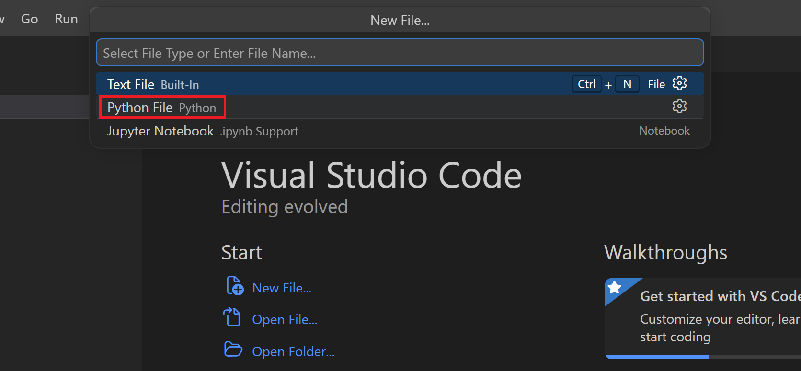</p> Note: 原课件：Spring_2026/Recitation6/Recitation6.md，“VSCode运行Python程序”部分；原截图直接沿用，仅精简说明并补充保存文件。 <!--v--> ## 运行代码 - 写好代码后先保存，点击右上角小三角运行；结果显示在下方终端。 <p>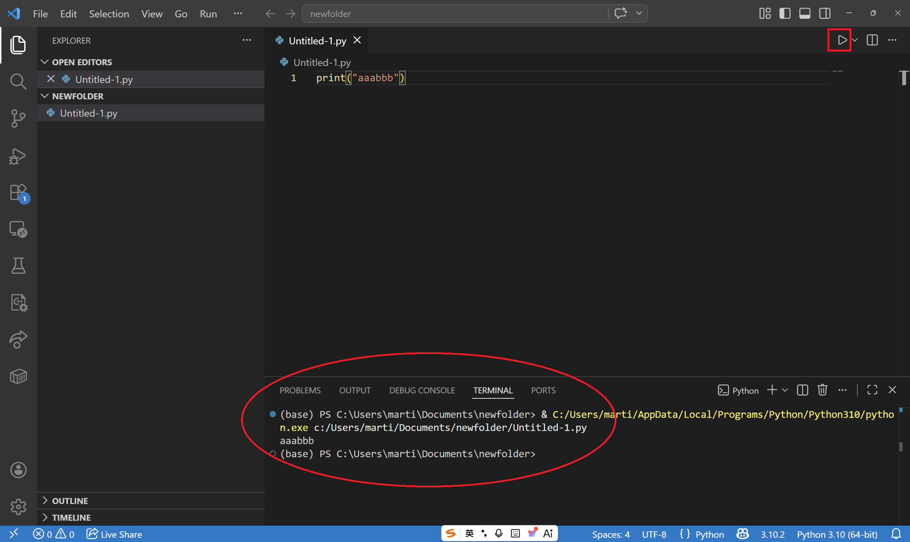</p> Note: 原课件：Spring_2026/Recitation6/Recitation6.md，“VSCode运行Python程序”部分；原截图直接沿用，仅精简说明并补充保存文件。 <!--v--> ## 语法错误：查看 Problems - 当你的代码有语法上的错误时，VSCode会直接察觉，并体现在Problems中 <p>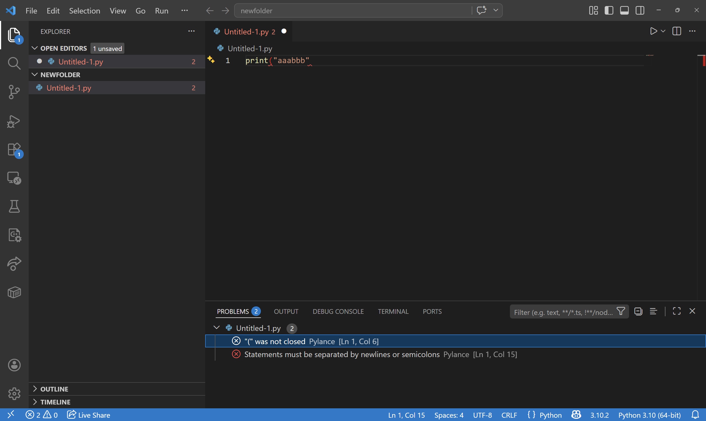</p> Note: 原课件：Spring_2026/Recitation6/Recitation6.md，“VSCode运行Python程序”部分；原截图直接沿用，仅精简说明并补充保存文件。 <!--v--> ## 运行报错：查看 Terminal - 当你的代码在运行时报错，terminal中会提供报错信息 <p>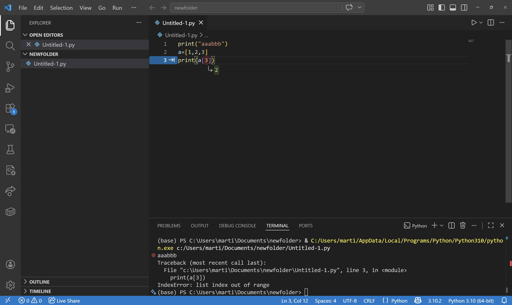</p> Note: 原课件：Spring_2026/Recitation6/Recitation6.md，“VSCode运行Python程序”部分；原截图直接沿用，仅精简说明并补充保存文件。 <!--v--> ## 选择 Python 解释器 安装 Microsoft 的 **Python / Python Debugger** 扩展。 命令面板：Windows / Linux `Ctrl+Shift+P`，macOS `⌘+Shift+P`。 输入 **Python: Select Interpreter**，选择课程使用的 Python 环境。 <p>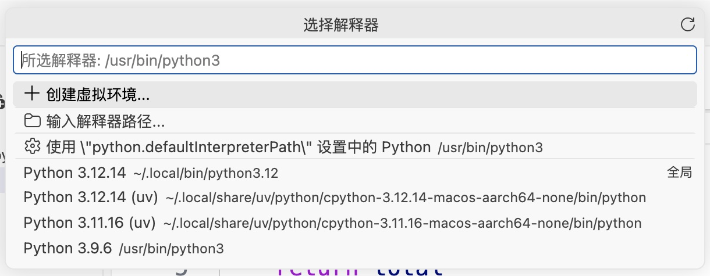</p> 这里选的是“用哪个 Python 来运行”，不是选择代码文件。 Note: 官方说明：https://code.visualstudio.com/docs/python/environments 。截图中的路径属于演示机器；学生应选择自己的课程环境，不必复制路径。 <!--v--> ## debug 常用方法 - `print()`：输出中间结果，检查程序执行到了哪里。 - `pdb` 是 Python 内置调试器；用 `breakpoint()` 暂停并进入调试。 - **VS Code 断点调试**：暂停程序，在界面中查看变量变化。 下面使用 `main` 调用 `add_numbers` 的例子，观察函数内部的执行过程。 Note: 原课件：Spring_2025/Recitation_4/Recitation_4B.md，“debug常用方法”。沿用 print、pdb、breakpoint 与 VS Code 调试的内容；将原文 breakpoint 补为可调用的 breakpoint()。 <!--v--> ## 断点调试示例 ```python # 一个如何打断点进行debug的演示 def add_numbers(x, y): print(f"Adding {x} to {y}") result = x + y print(f"Result:{result}") return result def main(x0, y0): x1 = x0 * 3 y1 = y0 * 4 return add_numbers(x1, y1) a = 5 b = 7 c = main(a, b) print(f'3x{a} + 4x{b} = {c}') ``` 示例文件：`debug_functions.py`。先预测：最后的 `c` 是多少？ Note: 代码直接取自 Spring_2025/Recitation_4/Recitation_4B.md 的断点演示，未修改程序逻辑。预期最后输出 3x5 + 4x7 = 43。 <!--v--> ## ① 设置断点，查看变量 在 `debug_functions.py` **第 12 行**左侧点击，按 **F5** 调试。 <p>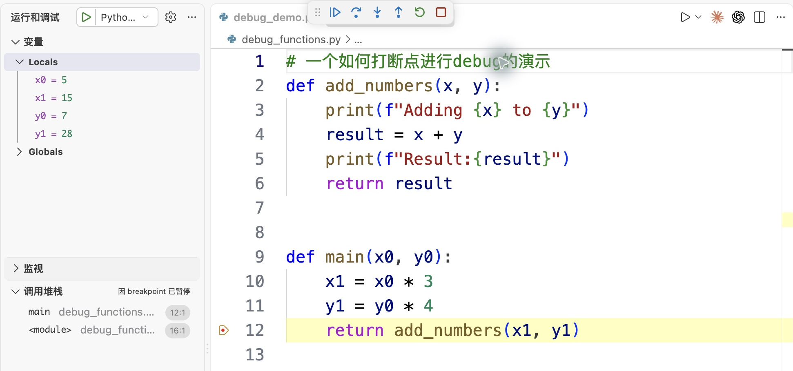</p> 黄色行**尚未执行**：`x1=15`、`y1=28`，即将调用 `add_numbers`。 首次启动时选择 **Python Debugger → Python File**。 Note: 截图为旧课件的原始代码在 VS Code 中实际运行。官方说明：https://code.visualstudio.com/docs/python/debugging 。演示工作区已配置启动文件；学生可直接选择调试当前 Python 文件。 <!--v--> ## ② 单步进入，观察函数内部 <p>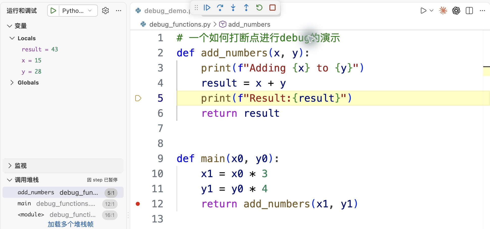</p> - 从上一页按 **F11** 进入 `add_numbers`，再按两次 **F10**。 - 此时 `result=43`；左侧“调用堆栈”显示函数之间的调用关系。 - 按 **F5** 继续运行，在终端检查最后的输出：`3x5 + 4x7 = 43`。 Note: 截图实际暂停在第 5 行，表示第 4 行的加法赋值已执行，第 5 行的打印尚未执行。代码来自 Spring_2025 Recitation 4B；截图为本次补充。官方说明：https://code.visualstudio.com/docs/debugtest/debugging 。 <!--v--> ## 调试工具栏 - **F5 继续**：运行到下一个断点，或程序结束。 - **F10 逐过程**：执行当前语句；遇到函数调用时通常不进入。 - **F11 单步进入**：进入可调试的函数，查看内部过程。 - **Shift+F11 跳出**：执行到当前函数返回。 - **Shift+F5 停止**：结束本次调试。 - **绿色圆箭头**：重新开始本次调试。 笔记本可能需要配合 `Fn`；也可以直接点击工具栏。 Note: 官方说明：https://code.visualstudio.com/docs/debugtest/debugging 。断点、异常仍可能提前中断“逐过程”或“跳出”；工具栏中的绿色圆箭头是重启。 <!--v--> ## 写代码时常用的功能 - **快速打开文件**：`Ctrl+P`；macOS 用 `⌘+P`。 - **查找文本**：`Ctrl+F`；整个文件夹查找用 `Ctrl+Shift+F`。 - **注释 / 取消注释**：选中几行，按 `Ctrl+/`。 - **跳到定义 / 重命名变量**：`F12` / `F2`。 - **查看问题**：`Ctrl+Shift+M`，定位报错和警告。 本页的 `Ctrl` 快捷键在 macOS 中换成 `⌘`。 拿不准快捷键时，打开命令面板，直接搜索功能名称。 Note: 官方说明：https://code.visualstudio.com/docs/editing/codebasics 。函数和变量的语义导航依赖 Python 语言支持；快捷键可被用户配置覆盖。 <!--v--> ## 终端和调试控制台 **终端 Terminal**：输入系统命令；也接收程序的 `input()`。 ```bash python3 debug_functions.py ``` **调试控制台 Debug Console**：程序暂停时，查看 Python 表达式。 ```python x y result ``` 想给 `input()` 输入内容时，切到 **终端**，不要输在调试控制台。 Note: 官方说明：https://code.visualstudio.com/docs/python/debugging 。本课件使用 integratedTerminal 控制台配置；调试控制台求值可能调用函数并改变程序状态，入门练习只查看变量。 <!--s--> <div class="middle center"><div style="width: 100%"> # Linux 终端：文件、命令与 AI </div></div> <!--v--> ## 终端：神秘的黑客工具？ - 你可能听过命令行、命令提示符、终端、交互式 Bash。 - 终端是**交互式**的：输入一句指令，立刻执行并得到结果。 - VS Code 运行代码时，也会弹出终端，输入命令来运行程序。 打开 **终端 → 新建终端**，试试： ```bash echo Hello, World ``` 本节使用 **Bash**（Linux / WSL；macOS 也可使用）。Windows 的 PowerShell / CMD 语法不同。 提示符 `$` 不用输入；若看到 `>>>`，先用 `exit()` 退出 Python。 Note: 原课件：Example/Example_1.md（SI100+ 2024），“终端：神秘的黑客工具？”。沿用交互式命令行、echo 练习及 VS Code 运行机制，补充 Bash 环境区别。参考：https://code.visualstudio.com/docs/terminal/basics ；https://ubuntu.com/tutorials/command-line-for-beginners 。 <!--v--> ## 我在哪里？文件在哪里？ <p>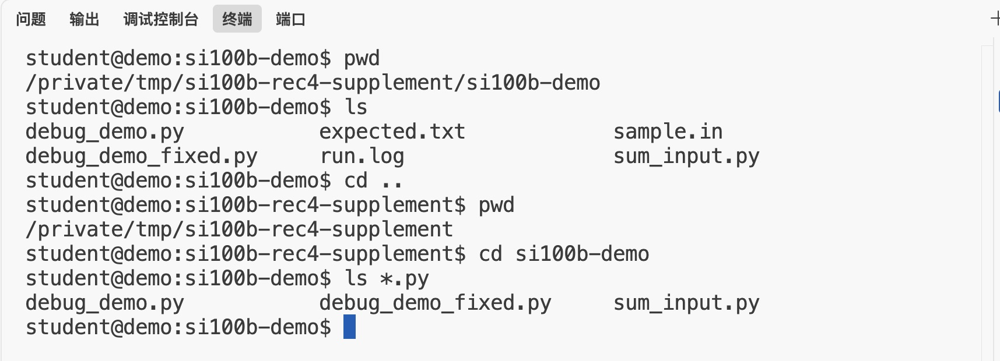</p> - 使用 `cd` 切换目录；空格用来区分命令和参数。 - `pwd` 显示当前目录；`ls` 列出文件。 - `..` 上一级，`~` 家目录；`ls *.py` 查看 Python 文件。 - `ls -la` 查看详细信息和隐藏文件；Linux 文件名区分大小写。 <!--v--> ## 相对路径与文件操作 下面的命令在示例文件夹中执行： ```bash mkdir practice # 创建文件夹 cp sample.in practice/input.txt # 复制 mv practice/input.txt practice/data.txt ls practice # 查看结果：data.txt rm -i practice/data.txt # 确认后删除副本 ``` - `practice/data.txt` 是相对于 **当前目录** 的路径。 - 路径中有空格时加引号，例如 `cd "my project"`。 - `mv` 可移动或重命名；`rm` 通常不会放入回收站。 Note: mkdir 示例假设 practice 尚不存在；重复跟做可改用 mkdir -p practice。所有删除都只针对刚创建的练习副本。参考：https://ubuntu.com/tutorials/command-line-for-beginners 。 <!--v--> ## 终端常用技巧 - **Tab**：补全文件名、目录名；有多个候选时再按一次。 - **↑ / ↓**：找回上一条或下一条历史命令。 - **Ctrl+R**：在 Bash 中搜索历史；`Esc` 退出搜索。 - **Ctrl+A / Ctrl+E**：移到行首 / 行尾。 - **Ctrl+L**：清理当前显示；不会停止程序。 - **右键粘贴（VS Code 终端）**：Windows 无选区时右键粘贴；Linux / macOS 右键打开菜单后选择“粘贴”。 程序一直在运行：按 **Ctrl+C** 中断。 进入 `less` 或 `man` 后：按 **q** 返回终端。 Note: Tab 补全、上下键历史、右键粘贴直接沿用 Example/Example_1.md（SI100+ 2024）的终端内容，并补充不同系统的默认行为。Bash 默认 Emacs 编辑模式下的 Readline 快捷键：https://www.gnu.org/software/bash/manual/html_node/Readline-Interaction.html 。右键默认行为参考：https://code.visualstudio.com/docs/terminal/basics 。Windows 有选区时右键会复制；macOS 默认还会选择光标处单词。终端设置或用户自定义快捷键可能覆盖默认值。 <!--v--> ## 看文件、找错误、数行数 <p>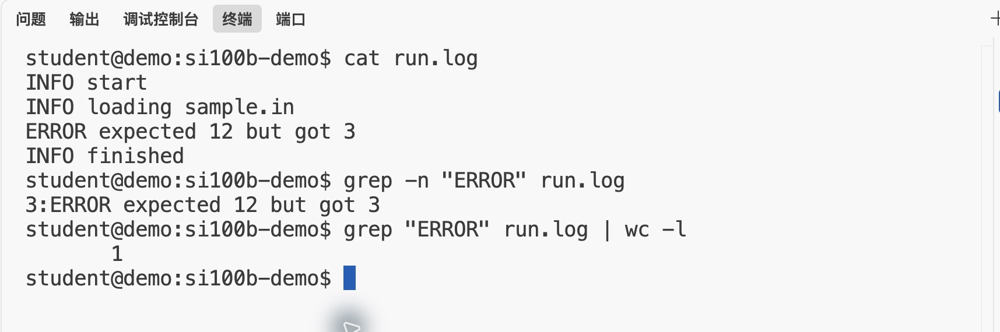</p> - `cat` 看短文件；长文件用 `less run.log`。 - `grep -n "ERROR" run.log` 查找匹配行，并显示行号。 - `|` 把前一个命令的标准输出交给后一个；`wc -l` 数行。 <!--v--> ## 用文件代替反复输入 `sum_input.py`：读取一行整数，输出总和。 ```python values = input().split() total = 0 for value in values: total += int(value) print(total) ``` `sample.in` 内容为 `4 6 2`；`expected.txt` 内容为 `12`。 ```bash python3 sum_input.py < sample.in > actual.txt ``` `<` 从文件读输入；`>` 将标准输出写入文件，**会覆盖原内容**。 <!--v--> ## 运行并比较结果 <p>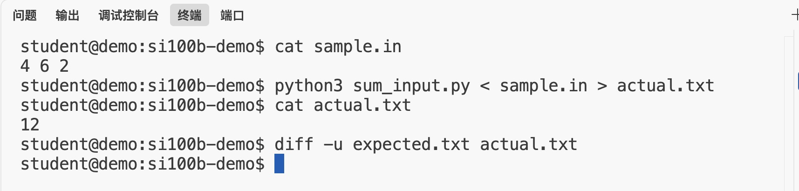</p> ```bash diff -u expected.txt actual.txt ``` - 文件相同：没有差异输出，返回提示符。 - 文件不同：`-` 表示预期文件中的行，`+` 表示实际文件中的行。 - `>>` 是追加；`2> error.log` 单独保存错误输出。 Note: diff 的符号对应此处的参数顺序。文件不存在等错误仍会报错，不能把所有“未显示差异”都视为测试通过。完整程序可直接用重定向；只要求提交函数的题目需另写本地测试调用。 <!--v--> ## 常见问题的第一步 - **找不到文件**：先运行 `pwd` 和 `ls`，检查路径和大小写。 - **command not found**：检查拼写，以及命令是否安装。 - **ModuleNotFoundError**：检查运行程序的 Python 环境。 - **看起来卡住了**：程序可能在等待 `input()`；切到终端输入。 ```bash python3 --version python3 -c "import sys; print(sys.executable)" ``` 编辑器选中的解释器与终端中的 `python3`，可能不是同一个。 <!--v--> ## AI 工具为什么离不开终端？ - **执行明确操作**：读文件、运行程序、执行测试。 - **处理大量文件**：查找日志、批量处理、重复执行命令。 - **使用远程环境**：服务器和训练任务常通过 Linux / SSH 操作。 AI 编程助手也会调用这些工具： **查看代码 → 提出修改 → 执行命令 → 阅读结果 → 再检查** 会用终端，才能看懂它做了什么，并判断结果是否正确。 Note: AI agent 的编辑器、终端、测试等工具能力参考：https://code.visualstudio.com/docs/agents/overview 。Linux/SSH 入门参考：https://ubuntu.com/tutorials/command-line-for-beginners 。本页是工具工作方式的概括，不承诺任意 AI 产品都有全部能力。 <!--v--> ## 把问题说清楚，验证 AI 的建议 提问时提供：**环境 + 完整命令 + 完整报错 + 预期结果**。 ```text 我在 Linux 的 Bash 中运行： python3 sum_input.py < sample.in 终端提示：sample.in: No such file or directory 请解释这个错误，并告诉我先检查什么。 ``` 拿到建议后：读懂命令 → 确认目录 → 执行 → 检查输出。 **课程作业遵守课程规定：不要用 AI 代写作业代码。** Note: 课程要求见本仓库 slides/Recitation1/Recitation1.md 与 slides/Recitation2/Recitation2.md。例子只讨论路径错误，不涉及作业答案。遇到求助问题时保留完整文本，不只截最后一行。 <!--s--> <div style="display: flex; justify-content: center; align-items: center; height: 700px; "> <div style="text-align: center; padding: 40px; background-color: white; border-radius: 20px; box-shadow: 0 0 20px rgba(0,0,0,0.1);"> <div style="display: inline-block; padding: 20px 40px; border-radius: 10 px; margin-bottom: 20px;"> <h1 style="font-size: 48px; font-weight: bold; margin: 0; color: rgb(16, 33, 89)">Thanks for Listening</h1> </div> <p style="font-size: 24px; color: #666; margin: 0;">Any questions?</p> </div> </div>